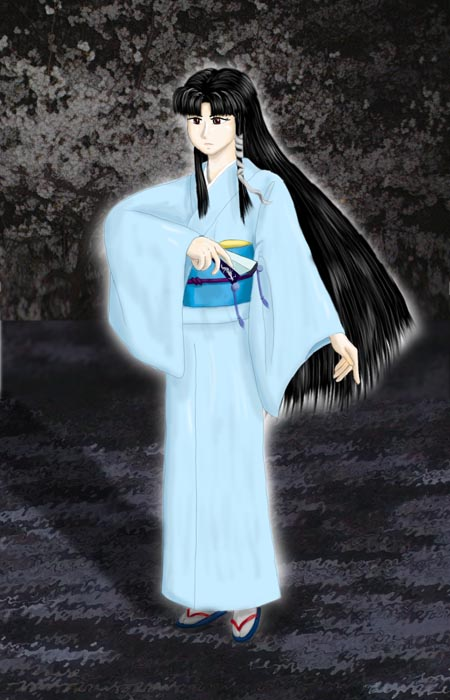

シェアワールド 姫神奇譚
作：亜希みちるさん 他
序章
第一章 「転生」 （亜希みちるさん）
第二章 「とまどい」 （亜希みちるさん）
本章
第一話 「虜」 （亜希みちるさん）
第二話「春の桜の散り際に」（亜希みちるさん）
第三話 「生贄」 （ジャージレッドさん）
第四話 「夢魔」（亜希みちるさん）
第五話 「死人」（亜希みちるさん）
第六話 「堕つるとき」（亜希みちるさん）
第七話 「巫女」（亜希みちるさん）
第八話 「復讐」（いちろうさん）
第九話 「戯れ」（南文堂さん）
第十話 「温泉」（亜希みちるさん）
第十一話 「神獣」（いちろうさん）
第十二話 「失われた性」（亜希みちるさん）
第十三話 「宿敵」（いちろうさん）
第十四話 「恋姫」（亜希みちるさん）
第十五話 「血」（亜希みちる＆こうけいさん）
第十六話 「恋」（亜希みちるさん）
第十七話 「永遠の月の夜」（ジャージレッドさん）
第十八話 「明鏡止水 (前編)」（いちろうさん）
外伝
外伝一 「血呑み児」 （亜希みちるさん）
外伝二 「全世界猫耳化計画」 （亜希みちるさん）
外伝三 「雨」 （亜希みちるさん）
外伝四 「初登校」 （亜希みちるさん）
外伝五 「ああっ姫神さまっ１」 （亜希みちるさん）
外伝六 「正直者は」 （こうけいさん）
外伝七 「美的乳飲料」 （ジャージレッドさん）
外伝八 「ああっ姫神さまっ２」 （亜希みちるさん）
外伝九 「お熱い方程式」 （南文堂さん）
外伝十 「神の領域」 （こうけいさん）
外伝十一 「姫神生誕」 （よしおかさん）
外伝十二 「姫神生誕・後日談」 （よしおかさん）
外伝十三 「戦い」 （亜希みちるさん）
外伝十四 「新撰組」 （るーふぁすさん）
外伝十五 「グラビアクイーン」 （亜希みちるさん）
外伝十六 「美光の恋」 （亜希みちるさん）
外伝十七 「春の桜の散り際に 二」 （亜希みちるさん）
外伝十八 「Ah! My Goddess」 （こうけいさん）
外伝十九＆二十 「始業式」 （こうけいさん）
Special Phase
Special phase-1 「混濁」 （亜希みちるさん）
特別篇「邪神降臨」（いちろうさん）

Illustrated by 南文堂さん